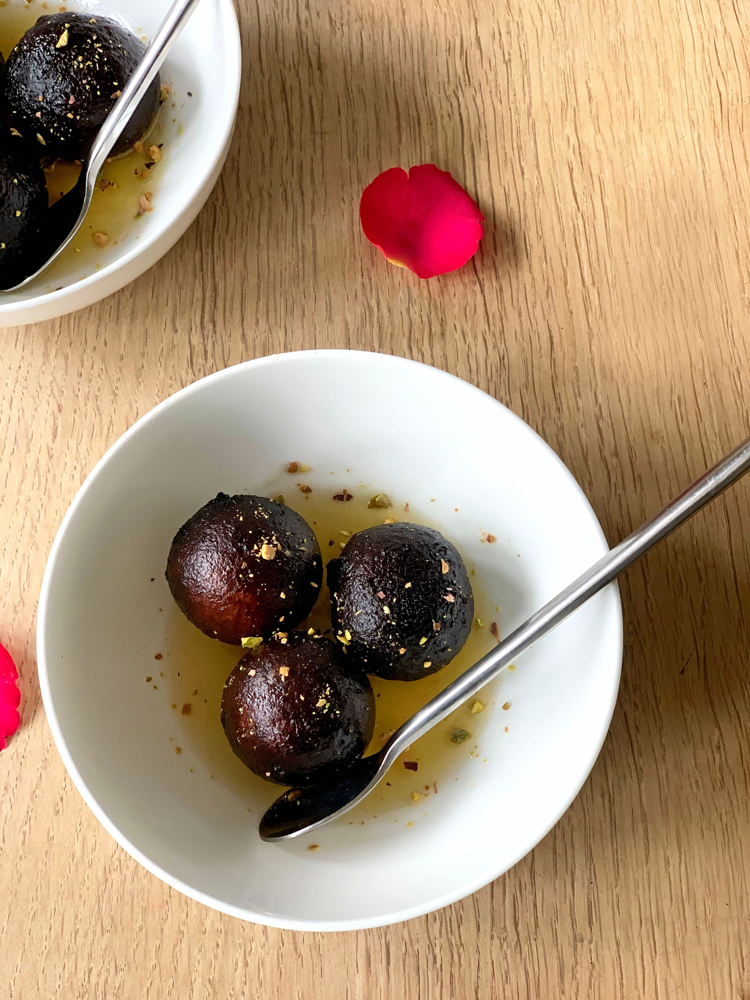

Ingredients:
- 1 cup milk powder
- 1/4 cup all-purpose flour
- 1/4 cup ghee (clarified butter)
- 2 tablespoons milk
- 1/4 teaspoon baking soda
- 1 cup sugar
- 1 cup water
- 1/2 teaspoon cardamom powder
- Saffron strands (optional) for garnish
- Chopped pistachios or almonds for garnish
Instructions:
- In a mixing bowl, combine milk powder, all-purpose flour, ghee, milk, and baking soda. Knead into a
soft dough.
- Divide the dough into small, equal-sized balls and roll them between your palms to make smooth
balls.
- In a deep pan, heat oil over medium heat. Fry the dough balls until they turn golden brown.
- In a separate saucepan, make the sugar syrup by boiling sugar and water until it reaches a
one-string consistency. Add cardamom powder and saffron strands if using.
- Immerse the fried dough balls (gulab jamuns) in the sugar syrup and let them soak for a few hours,
allowing them to absorb the sweetness.
- Garnish with chopped pistachios or almonds before serving.
- Serve the Gulab Jamun Bliss either warm or at room temperature.